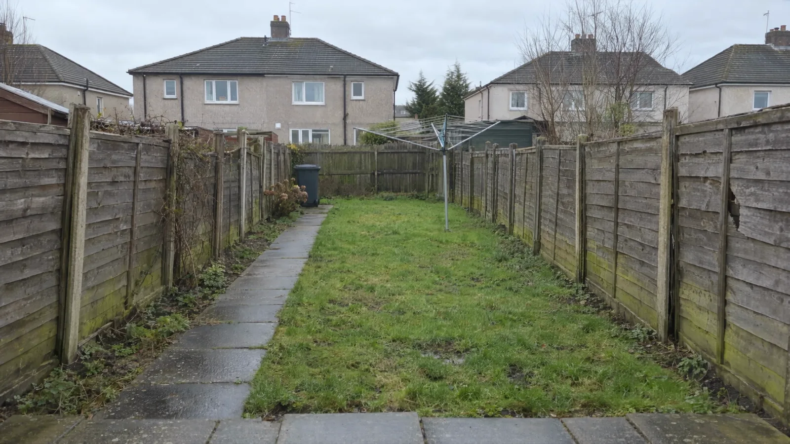

First Choice FencingOld fence out.
A straight new line in.
Fencing & Gate Installations, Wishaw based and working across Lanarkshire. Watch one garden's boundary rebuilt, then price yours by the metre.
Or try WhatsApp on the same number: message 07305 790488
24 metres, four styles.
Both sides of a semi, with the old fence taken away. Set your own length in the price builder.
Drag to see the difference.

 BeforeSlatted
BeforeSlatted
We measure. You get it in writing.
Pick a day and a time that suits. We check the run, the posts and the ground, then the price goes in writing with removal and gates on their own lines.
Pick a day →Four fences, one garden.
Guide prices per metre for a 1.8 m fence, fitted. Each style has its own page with what's included.
Horizontal slatted£105–£120 per metreWarm-toned horizontal timber slats with narrow even gaps between slim posts, dead-straight and level.
 Closeboard£68–£78 per metreVertical overlapping feather-edge boards on concrete posts with concrete gravel boards and a capping rail.
Closeboard£68–£78 per metreVertical overlapping feather-edge boards on concrete posts with concrete gravel boards and a capping rail.
 Hit and miss£88–£100 per metreVertical boards fixed alternately on both sides of the rails, solid from straight on, the same from both gardens.
Hit and miss£88–£100 per metreVertical boards fixed alternately on both sides of the rails, solid from straight on, the same from both gardens.
 Composite£170–£195 per metreCharcoal-grey composite boards slotted between anthracite aluminium posts, crisp and uniform.
Composite£170–£195 per metreCharcoal-grey composite boards slotted between anthracite aluminium posts, crisp and uniform.
On every job
- 01A written price before any work starts
- 02Old fence removal and gates listed as separate lines
- 03Posts set in concrete at a proper depth
- 04Straight lines and level tops, checked along the run
- 05Waste and offcuts taken away at the end
From a phone call to the last post, in 5 steps.
- I
Call or message
Ring or WhatsApp with the rough length, the style you like and a photo if you have one. We can give you a guide figure from that.
- II
Measure up
We come out, measure the run, check the old posts, the levels and access, and talk through styles and heights with you.
- III
Written price
You get a price in writing with the fence, any gates and the removal of the old fence listed as separate lines.
- IV
Old fence out, new fence in
The old fence comes down, posts go in on concrete footings, then the boards, rails and capping go on in a straight, level line.
- V
Walk round and tidy up
We walk the finished fence with you, check the gates swing and latch properly, and take the waste away.
Fences, gates and repairs, all priced.
Every service has its own page: what's included, guide prices and the questions people ask.
Closeboard fencing
Feather-edge boards on rails, concrete posts and gravel boards: the hard-wearing garden standard.
From £52/mHorizontal slatted fencing
Modern horizontal boards with even gaps and hidden fixings: the look that changes a garden.
From £82/mHit and miss fencing
Boards alternate either side of the rails, so both gardens get the good side and the wind gets through.
From £70/mComposite fencing
Wood-plastic boards in aluminium posts. Never needs painting and will not rot.
From £130/mGarden gates
Side gates and driveway gates that match the fence and close without a shove.
From £380Fence repairs
Snapped posts, blown panels and leaning runs, fixed properly rather than propped.
From £95/postWhat people ask first.
How much does a new fence cost per metre?
As a guide for a 1.8 m fence fitted in Lanarkshire: closeboard on concrete posts about £68 to £78 per metre, hit and miss about £88 to £100, horizontal slatted in treated softwood about £105 to £120, and composite about £170 to £195. Taking down the old fence and any gates are extra, and the survey confirms the final figure.
How do I get a price?
Call or WhatsApp with the rough length and a photo of the old fence for a guide figure. Then we come out, measure the run, look at the posts and the ground, and put the price in writing.
Do I need planning permission for a fence in Scotland?
Usually not for a back-garden fence up to about 2 metres high. Fences next to a road, at the front of the house, around a listed building or in a conservation area have tighter limits, often around 1 metre. If you are unsure, check with North Lanarkshire Council or South Lanarkshire Council before we start.
Who owns the fence between me and my neighbour?
In Scotland the title deeds decide. Many boundaries on older estates are mutual, meaning shared between both owners, including the cost of replacing them. It is worth checking your deeds and having a word with next door before a boundary fence is replaced.
How long does it take to put up a new fence?
A typical semi back garden, 20 to 25 metres, takes one to three days depending on the style: closeboard is quickest, slatted and composite take longer because every line has to be exact. Weather and the state of the old footings can add time.
Tell us the length. We'll tell you the price.
Ring with the rough length and the style you like, or build a guide price here first and bring it with you.